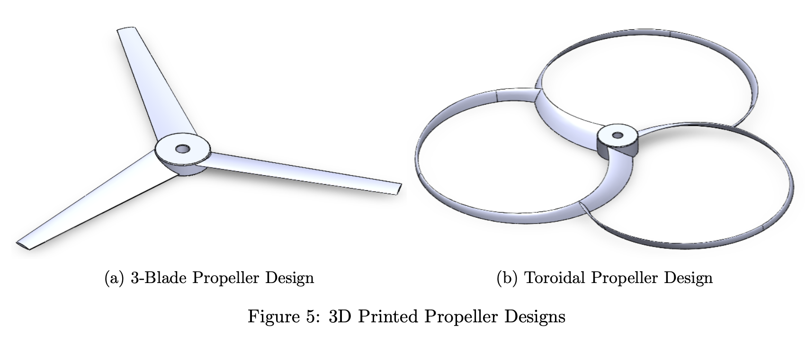
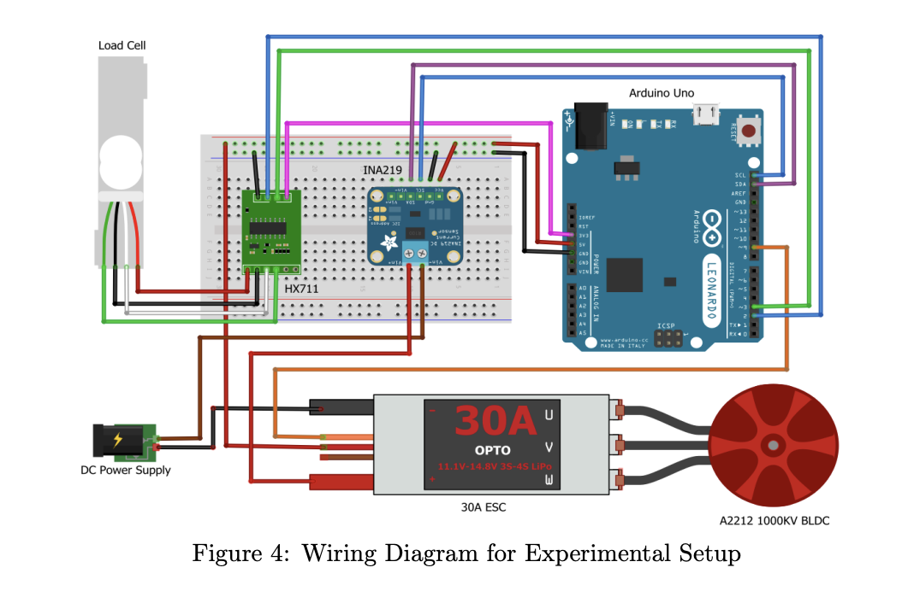

Overview
This project tested whether a toroidal propeller design could reduce noise while maintaining useful thrust. I built the test setup, collected measurements, and compared the two propeller types using MATLAB.
What I Built
- 3D-printed toroidal and 3-blade propeller prototypes.
- Custom thrust stand for controlled bench testing.
- Sensor workflow for thrust, power, RPM, and noise readings.
- MATLAB analysis for comparing test data.
Testing Setup
- BLDC motor and ESC for actuation.
- Load cell and HX711 for thrust measurement.
- INA219 for voltage, current, and power.
- Laser tachometer and dBA readings for RPM and noise.
Key Takeaway
The toroidal propeller was most promising at lower RPM, where it produced smoother acoustic behavior and competitive efficiency. At higher RPM, the design showed tradeoffs in noise and efficiency, making the test useful for understanding where the geometry performs best.